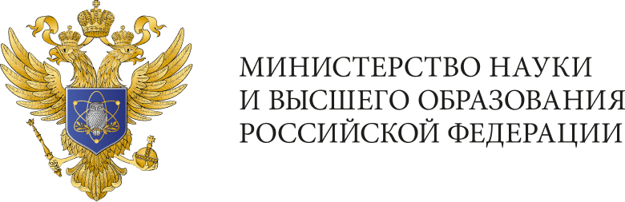
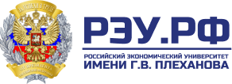

Семинары-совещания в формате стратегической сессии
Стратегическое развитие университетов:
трансформация финансовой модели
25-26 апреля 2024
Культурный Центр НИУ ВШЭ
Организатор:
Операторы:

25-26 апреля 2024
Культурный Центр НИУ ВШЭ
01
Ректоры вузов
02
Проректоры, курирующие финансовые блоки, финансовые директоры вузов
03
Руководители стратегических служб
04
Представилели органов власти
Максимальное количество участников: до 460 человек
Переход от модели управления ресурсами университета к модели создания ценности
Комбинация
экспертных выступлений, групповой
и индивидуальной работы
Погружение
в корпоративный тип мышления
и актуальные методы стратегического
и финансового менеджмента
Обращение
к ролям «лидер»
и «предпринима- тель» у целевой аудитории
Командная работа ректоров, руководителей стратегических
и финансовых служб, органов гос. власти
Разбивка на группы с учетом количественных и качественных отличий в деятельности вузов
Площадка
Культурный Центр НИУ ВШЭАдрес
Покровский бульвар, д.11, корпус 6Телефон
+7 (953) 125 56-85 (?)Почта
minobr (?)